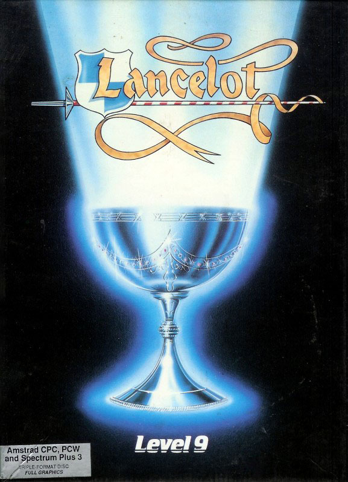
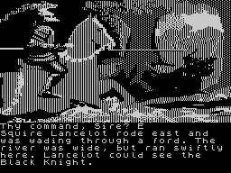

Lancelot


{kind=link}

| Publisher: | Level 9 |
| Price: | £14.95 Tape, £19.95 Disk |
| Year: | 1988 |
| Source: | CRASH, Issue 60 |

Everyone must have heard of the legends of King Arthur and the Knights of the Round Table, and especially of the gallant Sir Lancelot, bravest Knight of all, who lost his heart to the fair Queen Guenever. But Level 9’s Lancelot is based not on Hollywood films, which misinterpret some of the original tales, but on La Morte D’Arthur, a book by Sir Thomas Malory, published in 1485. And the booklet accompanying the game contains a short version of the Arthurian legends to help set the scene.
Sir Lancelot du Lake is a fitting hero for the game — he was never fairly beaten in any fight. The story of how he became the best knight in the world starts when he is riding along a forest road and comes to a ford — and this is also where the adventure begins.

A Black Knight challenges him, telling him that he must prove his worth in order to cross the ford. Accepting the challenge results in an easy victory for Lancelot, who then has the choice of either killing or sparing his opponent. Not to give too much away it’s a good idea to accept the Knight’s surrender for he is none other than King Arthur. Thus Lancelot is subsequently knighted and sent off to the mythical realm of Logris where valorous deeds must be done to earn the accolade of best knight.
As well as freeing imprisoned knights, there are many unknown quests for Lancelot to complete in Logris, before returning to Camelot. The final part of this epic adventure is the Quest for The Holy Grail, where Lancelot goes in search of the elusive golden chalice. You are also given a choice, on loading, of going straight to this final segment of the adventure.
Commands are issued using a typically-sophisticated Level 9 parser, with provision for interaction with the many other knights and characters encountered by Lancelot. And he certainly gets around a bit (in both senses of the phrase!), gadding about Britain and even into Northern France, while losing his head over his beloved Guenever and the stunningly beautiful Elaine, who he rescues from a bath of boiling water!
One unusual feature of Lancelot is the ability to go to a known place by simply typing GO TO place (as in Knight Orc). Objects can also be discovered in a similar manner by entering FIND object. Lancelot then goes on ‘automatic pilot’, selecting the shortest route to stipulated place/object. This feature makes laborious mapping largely unnecessary, although at times it can be a little confusing.
Character interaction plays an important part in the adventure, and Lancelot may talk to the colourful characters he meets and order loyal knights to follow him, as well as issuing more complex commands such as SIR ECTOR, GO SOUTH, TAKE EVERYTHING, THEN GO NORTH.
Of course, an essential part of the game is the combat. This is handled automatically, with the text giving a blow-by-blow account of what’s happening — usually the swashbuckling Lancelot manages to smash his opponents into submission with scarcely a scratch (never mind a wound) to show for it. Usually Lancelot has the opportunity to spare the beaten opponent’s life, and should do so because if he is unchivalrous he loses honour and his score (which represents how good a knight he is) is reduced.
Due to its refined parser, and the freedom to travel all over the land without much restriction, Lancelot is very easy to get in to, but accomplishing any valorous deeds requires more thought. One problem is that with the lack of the usual adventuring restrictions and the GO TO option, it sometimes appears to play by itself. Despite this, there is real character interaction and virtually every object found can be examined, helping to create a good adventuring atmosphere.
The +3 version comes on an unusual triple format disk (the other two formats being Amstrad CPC and Amstrad PCW). Once the main program has been loaded you flip the disk so that pictures can be loaded from it as necessary. Graphics are monochromatic and about average, but can be made smaller by scrolling them up/down the screen Amiga fashion — which is nice. The disk also allows the conversion of previous Level 9 dual format disks (Amstrad CPC/PCW), including Knight Orc and Time & Magick, to the +3.
In conclusion, Lancelot is truly an epic adventure which successfully captures the mood of Arthurian Britain with some lengthy, accurate descriptions. Technically superb with fluent play, this is a very fine adventure which is well worth the rather high asking price. A further incentive for purchase is the included competition, in which the winner will receive a silver ‘replica’ of the mythical Holy Grail (I thought it was gold)!
| Overall: | 90% |